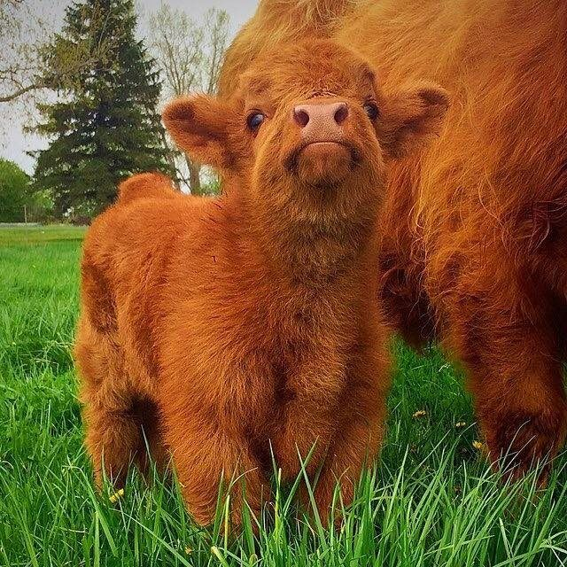

As babies, highland cows are argueably some of the cutest baby animals that you will come across. Many say they get less cute once they have become fully grown, but they have a special charisma and charm even as I adults, I think. 'Why do people think they make such cute animals?'' you might ask. Here are some of their most prevalent and lovable qualities.
As you can see, it is not without reason that they are so adored among the population. Once they get older they grow horns, they stop looking cute.
